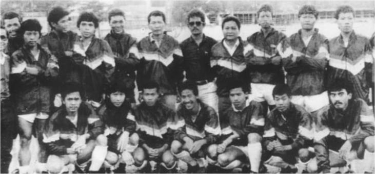
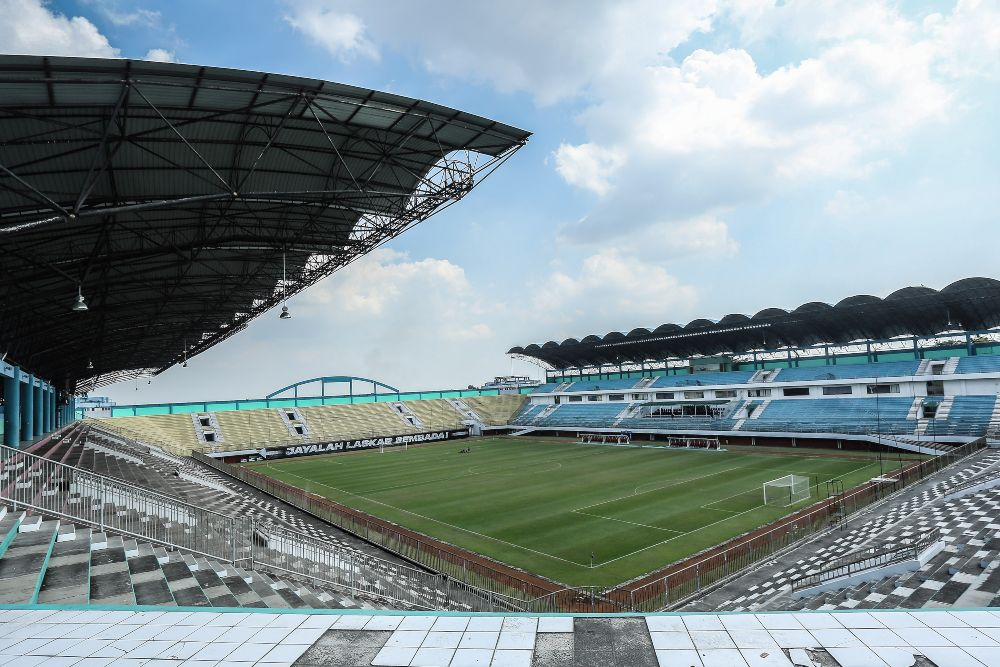
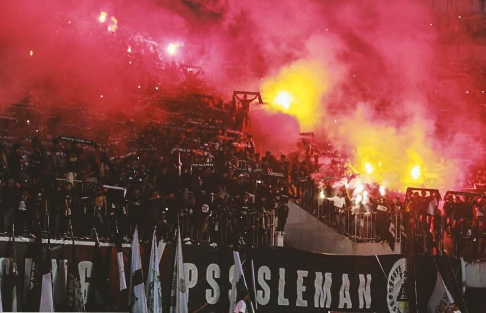
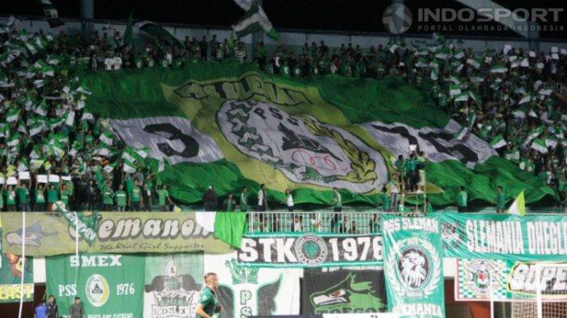

Sejarah

Perserikatan Sepak bola Sleman (PSS) lahir pada Kamis Kliwon tanggal 20 Mei 1976 semasa periode kepemimpinan Bupati Drs. KRT. Suyoto Projosuyoto. Lima tokoh yang membidani kelahiran PSS adalah H. Suryo Saryono, Sugiarto SY, Subardi, Sudarsono KH, dan Hartadi. PSS didirikan pada awalnya hanya mereka senang dengan sepak bola. Dengan sepak bola mereka yakin akan menambah teman, meningkatkan persaudaraan dan tentu saja dengan sendirinya meningkatkan persatuan dan kesatuan masyarakat Kabupaten Sleman. Lahirnya PSS dilatarbelakangi bahwa pada waktu itu di Daerah Istimewa Yogyakarta (DIY) baru ada dua perserikatan yaitu PSIM Yogyakarta dan Persiba Bantul.
Waktu berdirinya PSS hampir bersamaan dengan saat berdirinya Persikup Kulon Progo dan Persig Gunungkidul. Saat itu, selain di Kota Yogyakarta, potensi sepak bola di empat daerah kabupaten tidak terpantau dan kurang terkelola dengan baik. Padahal beberapa daerah di Kabupaten Sleman, seperti Prambanan, Sleman dan Kalasan, Sleman sejak dulu sudah memiliki tim sepak bola yang tangguh, yang ditandai dengan hadirnya beberapa tim luar daerah yang mengadakan pertandingan uji coba dengan tim di kawasan tersebut. Meskipun klub-klub sepak bola di Kabupaten Sleman telah ada dan tumbuh, tetapi belum terorganisasi dengan baik karena di Kabupaten Sleman belum ada perserikatan. Hal ini berdampak terhadap kelancaran klub-klub sepak bola di Kabupaten Sleman dalam mengadakan kompetisi sehingga banyak pemain dari Kabupaten Sleman yang bergabung ke klub-klub sepak bola di Kota Yogyakarta dan Kabupaten Bantul.
Keinginan masyarakat yang kuat di Kabupaten Sleman untuk memiliki perserikatan klub sepak bola akhirnya mulai terwujud dengan adanya informasi yang disampaikan oleh Komda PSSI DIY pada waktu itu (Prof. Dr. Sardjono) yang menyatakan bahwa syarat untuk membentuk perserikatan sepak bola minimal harus ada lima klub. Di Kabupaten Sleman pada waktu itu sudah ada lima klub yaitu PS Mlati, AMS Seyegan, PSK Kalasan, Godean Putra dan PSKS Sleman. Akhirnya, tepat pada tanggal 20 Mei 1976, PSS dibentuk dengan Ketua Umum Gafar Anwar (seorang polisi).
Tiga tahun pertama PSS baru mengadakan kegiatan yang lebih bersifat intern, misalnya mengadakan kompetisi antar klub anggota PSS. Kompetisi sekaligus dipakai oleh pengurus untuk lebih mempromosikan, memasyarakatkan olahraga sepakbola di wilayah Kabupaten Sleman. Lambat laun jumlah klub yang menjadi anggota PSS semakin banyak sehingga harus dibagi menjadi beberapa divisi. Saat ini jumlah klub anggota PSS ada 84 klub yang terbagi menjadi tiga divisi.
Stadion Maguwoharjo Sleman

Stadion Maguwoharjo (Jawa: ꦱꦼꦠꦝꦶꦪꦺꦴꦤ꧀ꦩꦒꦸꦮꦲꦂꦗ, translit. Setadhiyon Maguwaharja) adalah stadion sepak bola di Kalurahan Maguwoharjo, Kapanewon Depok, Kabupaten Sleman, Daerah Istimewa Yogyakarta yang juga merupakan markas klub sepak bola PSS Sleman. Stadion ini dibangun pada tahun 2005 dan mengalami pembenahan pada tahun 2007 akibat dari gempa bumi yang terjadi pada 27 Mei 2006. Stadion Maguwoharjo memiliki tribun berdiri dengan kapasitas hingga 32.000 penonton. Stadion ini mengusung gaya stadion sepak bola modern dengan mengadopsi bentuk San Siro dengan ciri khas menara dengan lorong berputar yang terletak di empat sudut. stadion ini tidak memiliki lintasan atletik sehingga penonton akan lebih nyaman dalam menyaksikan pertandingan.
Suporter Pendukung PSS Sleman
Brigata Curva Sud

BCS pada awalnya dibentuk oleh lima komunitas suporter PSS Sleman pada 2010, dengan mengadopsi kultur tifosi atau suporter Italia.
Nama Brigata Curva Sud berasal dari bahasa Italia dengan arti pasukan tribune selatan. Penggunaan bahasa itu terispirasi ideologi suporter Ultras Italia. Mereka meneriakkan yel-yel, menyanyi, membuat koreografi, hingga kreativitas lain sepanjang pertandingan.
Istilah-istilah dunia suporter Italia begitu kental pada BCS ketika bernyanyi atau meneriakkan yel-yel, seperti Vinci per noi, Siamo noi, hingga Bianco Verde, dan Ale. Pada Februari 2017 BCS dinobatkan sebagai suporter ultras terbaik di Asia oleh sebuah situs digital pencinta bola dunia.
BCS dikenal memiliki semboyan No Leader Just Together. Meski tak ada pemimpin, bukan berarti tak ada aturan. BCS menerapkan aturan ketat bagi anggotanya. Dari wajib bersepatu, beratribut serba hitam, dilarang meniup terompet, sampai harus berdiri sepanjang pertandingan. Suporter BCS juga wajib membeli tiket pertandingan.
Slemania

Slemania adalah organisasi sekaligus identitas bagi kelompok pendukung kesebelasan PSS Sleman. Slemania memiliki organisasi bagian untuk suporter perempuan yang bernama #Slemanona
Slemania dideklarasikan di Ghriya Kedaulatan Rakyat, Yogyakarta pada 22 Desember 2000 . Saat ini Slemania memiliki tidak kurang dari 18.000 anggota dan 50.000 simpatisan yang tergabung dalam 600an laskar (organisasi internal) di Daerah Istimewa Yogyakarta dan di kota-kota besar di seluruh Indonesia. Anggota Slemania sangat beranekaragam dari yang tidak mengenyam bangku sekolah sampai yang menempuh jenjang pendidikan tinggi. Begitu juga dengan latar belakang ekonomi dan profesi.
Slemania memiliki slogan sebagai, dan pernah terpilih sebagai nominator suporter favorit dalam Sepak Bola Award-ANTV 2003 bersama The Jakmania dan Laskar Benteng Viola. The Jakmania akhirnya terpilih sebagai penerima penghargaan tersebut. Slemania kembali terpilih sebagai nominator dalam Sepak Bola Award-ANTV 2004 bersama dengan Viking Persib dan The Macz Man. Slemania akhirnya meraih penghargaan tersebut.
Dalam kelompok suporter Slemania dikenal istilah anggota dan simpatisan Slemania. Istilah anggota dan simpatisan digunakan untuk membedakan tingkat militansi dan keaktifan seseorang di Slemania.